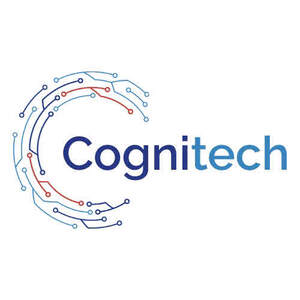

Trade Mark Journal No.2025/030 25 July 2025
UK00004228572 3 July 2025 (9,35,37,42,45)

- Class 9
- Computer hardware; Hardware (Computer -); Computers and computer hardware; Computer hardware for telecommunications; Computer networking hardware; Computer network hardware; Monitors [computer hardware]; Computer memory hardware; Microchips [computer hardware]; Wearable computer hardware; Computer software; Computer hardware for use in computer-assisted software engineering; Communications servers [computer hardware]; Computer graphics software; Computer hardware for games and gaming; Computer gaming software; Computer peripherals; Firmware for computer peripherals; Computer software for accessing computer networks; Computer application software for use with wearable computer devices; Computer software for the monitoring of computer systems; Operating computer software for main frame computers; Computer software for computer aided software engineering; Computer software for testing vulnerability in computers and computer networks; Computer firmware; Computer hardware for the control of lighting; Mounting racks for computer hardware; Computer telephony software; Computer programming software; Computer software for encryption; Computer firewall software; Computer operating software; Computer interface software; Computer chipsets; Computer games software; Computer software applications; Software for computers; Computer antivirus software; Computer hardware modules for use in Internet of Things electronic devices; Computer game software; Computer software for use in computer access control; Computer motherboards; Computer whiteboard software; Computer software platforms; Computer software for education; Computer e-commerce software; Wireless computer peripherals; Computer software adapted for use in the operation of computers; Computer software downloadable from global computer networks; Controlling software for computer printers; Computer software programs; Computer software for use in programming facsimile machines; Software for tablet computers; Computer software for entertainment; Computer systems; Computer hardware modules for use with the Internet of Things [IoT]; Computer network-attached storage [NAS] hardware; Computer network-attached storage (NAS) hardware; Computer hardware for the processing of positioning data; Computer software for use in computer network access control; Computer game software downloadable from a global computer network; Educational computer software; Wearable computer peripherals; Computer application software; Computer mainframes; Computer modems; Computer software for the detection of threats to computer networks.
- Class 35
- Retail services in relation to computer hardware.
- Class 37
- Installation of computer hardware; Repair of computer hardware; Maintenance of computer hardware; Upgrading of computer hardware; Installation of hardware for computer systems; Installation and repair of computer hardware; Updating of computer networking and telecommunications hardware; Repair and maintenance of computer and telecommunications hardware; Maintenance and repair of computer hardware.
- Class 42
- Rental of computer hardware and computer software; Rental of computer hardware and computer peripherals; Design of computer hardware; Computer hardware (Design of -); Computer hardware design; Design of computer hardware and software; Computer hardware and software design; Designing of computer hardware; Development of computer hardware for computer games; Computer hardware development; Development of computer hardware; Rental of computer hardware and software; Testing of computer hardware; Leasing of computer hardware; Computer hardware leasing; Rental of computer hardware; Computer hardware rental; Development of computer hardware and software; Troubleshooting of computer hardware and software problems; Design services for computer hardware; Computer hardware design services; Computer and computer software rental; Configuring computer hardware using software; Design and development of computer hardware and software; Configuration of computer software; Rental of computers and computer software; Repair of computer software; Computer software engineering; Design and development of computer hardware; Customized design of computer hardware; Computer software design; Computer rental and updating of computer software; Software design (Computer -); Computer software (Design of -); Design of computer software; Installation of computer software; Computer software installation; Computer software (Installation of -); Design of computer peripherals; Design services relating to computer hardware and to computer programmes; Diagnosing computer hardware problems using software; Upgrading of computer software; Computer programming of computer games; Consultancy in the field of computer hardware; Computer hardware (Consultancy in the field of -); Rental of computer hardware and facilities; Rental of computer software, data processing equipment and computer peripheral devices; Computer software maintenance; Computer software (Maintenance of -); Maintenance of computer software; Research in the field of computer hardware; Consultations in the field of computer hardware; Copying of computer software; Computer programming and software design; Updating of computer software; Computer software (Updating of -); Software (Updating of computer -); Programming of computer game software; Consultancy and advice on computer software and hardware; Testing of computer software; Computer software integration; Renting computer software; Software (Rental of computer -); Computer software rental; Computer software (Rental of -); Rental of computer software; Leasing of computer software.
- Class 45
- Licensing of computer software; Computer software licensing.
Cognitech(UK) Limited